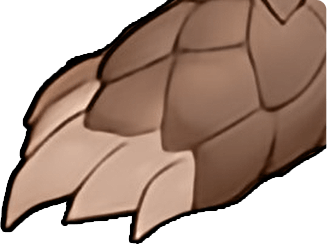
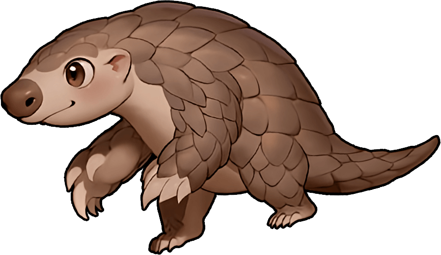
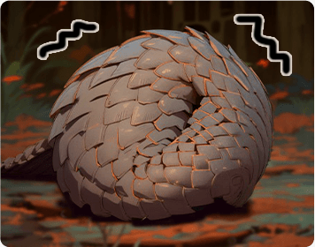
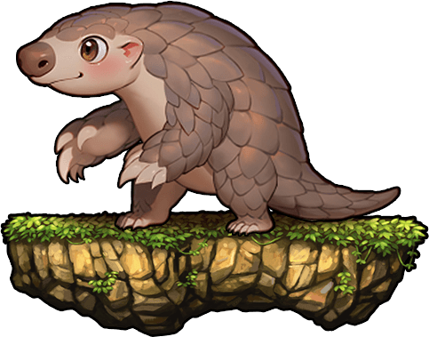

二周年紀念守護 —— 穿山甲米克
米克是這片森林的守護者，他對自己的家園充滿熱愛，每天都在努力維護森林的平衡…。

強而有力的5個腳趾
前爪大且有力，為了不磨損還會特別將爪子彎起走路。

最強聽力小高手
耳朵露在外頭，甚至可以聽見土壤中蟻群竄動聲。
輕輕翹起的尾巴
走路時會將尾巴舉起，維持整體的平衡。

膽小怕生的個性
遇到同類也容易縮起來的害羞內斂個性，夜裡才出現的獨行俠。

他們生活的好，我們也會生活的好；瀕危動物的未來，取決於我們和我們做出的選擇。
更多瀕危動物保育資訊，請見「農業部林業及自然保育署瀕危動物專區」
考古揭密!與你一起走過的彈史...
活動時間 : 2024年7月25日 ~ 2024年8月7日 23:59止
親愛的彈友您好，請先 彈彈堂遊戲帳號。
從2024年7月25日開始的考古活動，每隔兩天將開放嶄新區塊和超值獎勵；活動期間彈友們成功登入帳號後，點按已開放的考古區域即可領取官方準備之好禮。
活動區塊獎勵的領取時間截至 8月7日，彈友們請選擇想領獎的帳號，依照開放時間進入網頁來獲取豐厚的考古獎勵。獎勵的價值將隨著區域從左至右依序提升，記得在活動期間內經常登入網頁以獲取更多虛寶！
登入遊戲帳號並點擊考古活動欄位，當出現「已完成考古，你是最棒的彈彈!」的彈窗提醒時即表示成功完成領獎，獎勵將直接匯入遊戲內信箱。
※請選擇正確伺服器及對應角色進行綁定，綁定後將無法取消或更換綁定角色，領取獎勵後官方將直接派發獎勵至遊戲內且單一獎勵僅供領取乙次。
※詳細活動辦法依本公司公告為準，本公司保留最終解釋及決定權。參與本活動即表示承認並接受本活動的注意事項及相關規定，若有未盡事宜，悉依官方相關公告辦理。